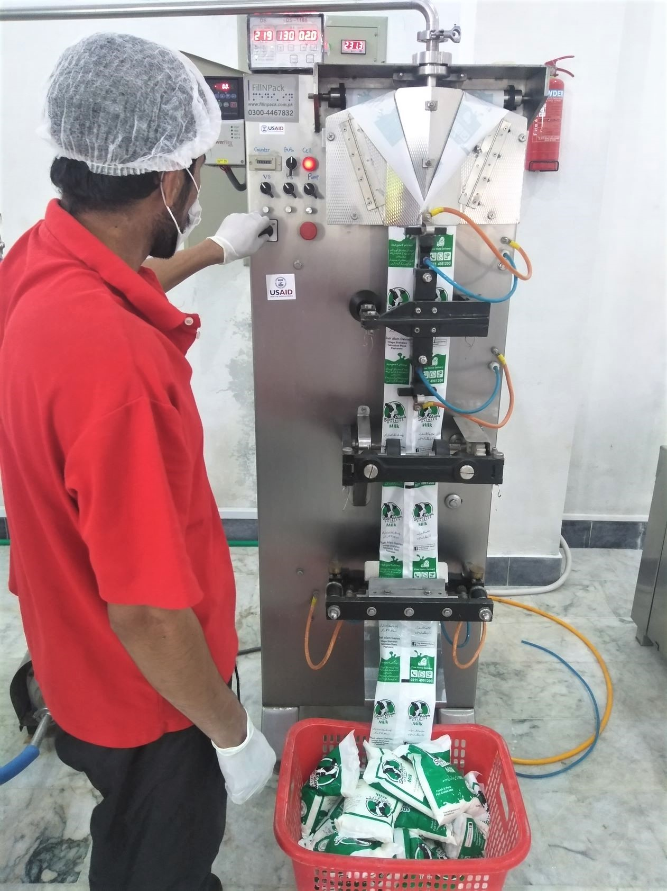
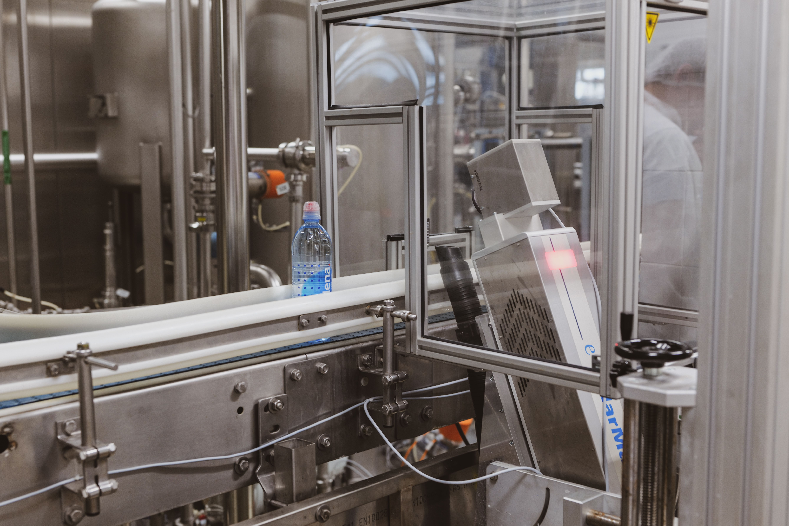

Susu Pasteurisasi Kemasan Plastik 190 mL
Kemasan 190 mL diproses secara otomatis menggunakan mesin pouching dan disusun dalam krat industri.
PT. GGLC Dairy Operation menghasilkan susu segar pasteurisasi dalam kemasan plastik dan botol. Halaman ini merangkum jenis kemasan dan tahapan proses yang dijelaskan dalam sumber informasi perusahaan.

Kemasan 190 mL diproses secara otomatis menggunakan mesin pouching dan disusun dalam krat industri.
Pengisian dan proses press dilakukan secara manual menggunakan alat chiller pedal, kemudian dipindahkan ke inventori Finish Good.

Tahapan pengemasan meliputi rinsing, filling, sealing, capping, dan packaging. Produk disusun sebanyak 12 botol per kardus.
Produk botol 2 L dikemas sebanyak 6 botol per kardus dengan pemeriksaan volume, foaming, dan seal.